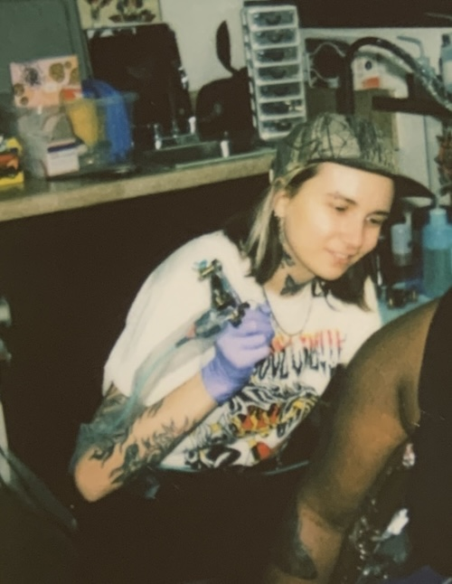
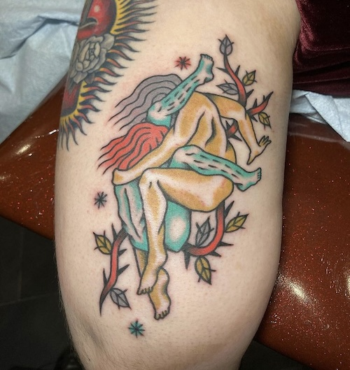
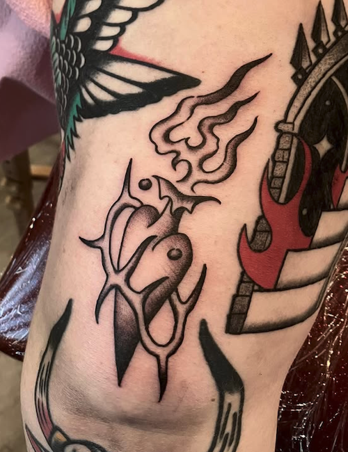
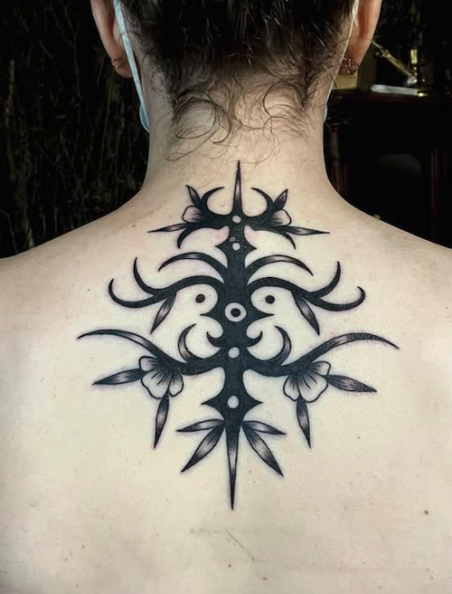
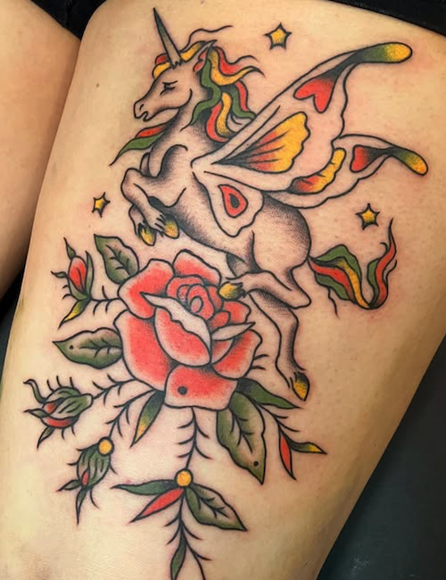
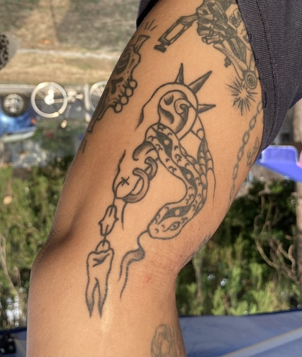

Casey
they/them
Tattoo Artist

Casey is a tattoo artist with six years of experience, providing a unique style influenced by folk art, outsider art, American traditional tattooing, and vintage design. Their work blends bold lines, intricate details, and traditional techniques to create timeless, personal designs.
Passionate about the transformative power of tattoos, Casey is dedicated to helping their queer and trans community, as well as all clients, express themselves through meaningful body art that connects to their stories and identities.
To book a tattoo with Casey, email csteentattoo@gmail.com
Passionate about the transformative power of tattoos, Casey is dedicated to helping their queer and trans community, as well as all clients, express themselves through meaningful body art that connects to their stories and identities.
To book a tattoo with Casey, email csteentattoo@gmail.com

2101 S. Lambert Street, Philadelphia
WELCOME TO YOUR
FRIENDLY CORNER
TATTOO SHOP.
FRIENDLY CORNER
TATTOO SHOP.